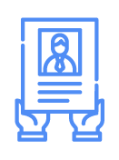
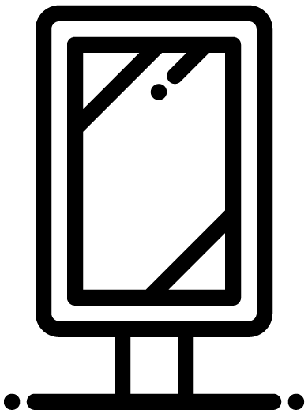

Поддержать фонд
Поддержать фондВолонтеры “Хеседа” -335 человек - принимают активное участие в работе всех отделов и служб. Виды деятельности волонтеров разнообразны: дежурство в отделах “Хеседа”, консультации специалистов, обзвон и посещение подопечных, сопровождение обедов, выдача и доставка гуманитарной помощи, рецептов, лекционная и концертная деятельность и многое другое. Для волонтеров проводятся семинары, лекции, Шаббаты, тематические встречи, работают 4 волонтерских клуба.
МЫ ВСЕГДА РАДЫ НОВЫМ СПОНСОРАМ
Нас 335 человек

Как можно помочь фонду
1
Оставить заявку
Оставляете заявку на этой странице
2
Познакомиться
Мы с вами связываемся и узнаем, как вы можете помочь фонду
3
Поддержать
Рассказываем, как работает проект, как осуществляется помощь и т.д.
4
Реализовывать мечты
Ваше участие приносит пользу тем, кто в этом нуждается
Что нам особенно нужно
Финансовая поддержка

Поддержка конкретного проекта
Оборудование
Транспортные расходы
Медикаменты
Продукты
Проф.навыки
Гранты
Как информационный спонсор может помочь проекту
 Распространять информацию в социальных сетях
Распространять информацию в социальных сетях

Вешать афиши и информационные постеры
 Рассказывать о проекте на различных информационных площадках
Рассказывать о проекте на различных информационных площадках